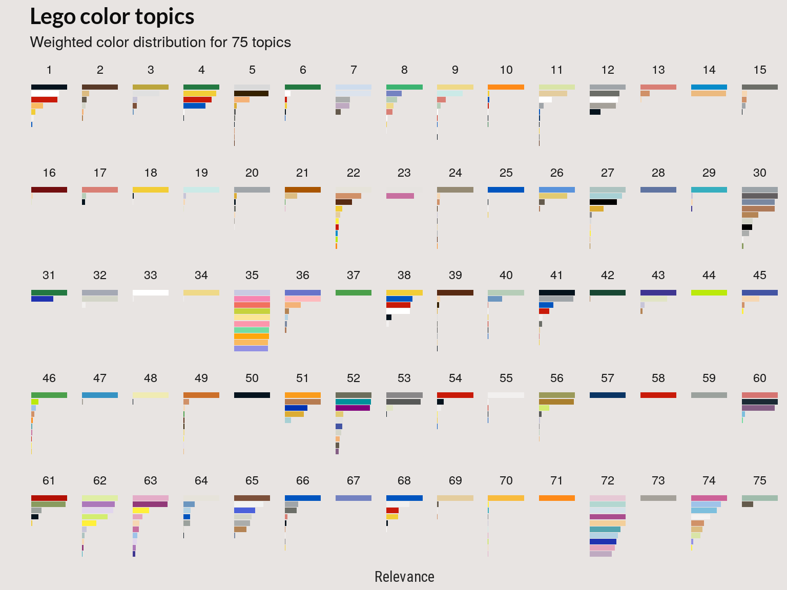
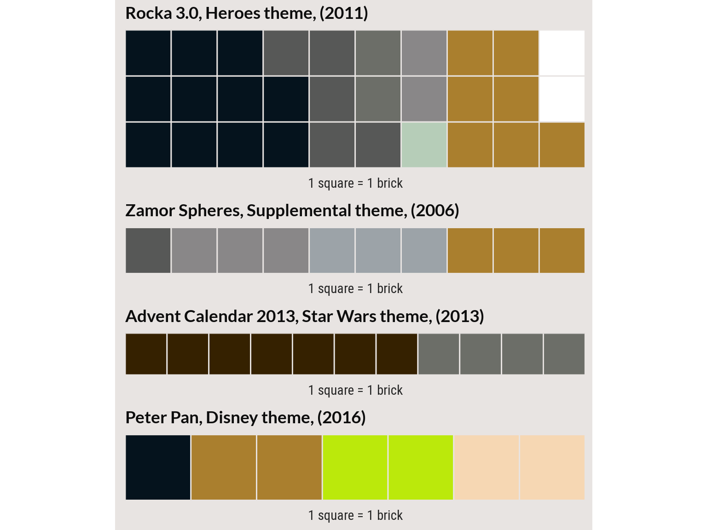

Color and topic distributions
Nathanael Aff
# Update knitr chunk options
# https://yihui.name/knitr/options/#chunk-options
knitr::opts_chunk$set(
cache = FALSE,
# dependencies
autodep = TRUE,
# Don't rerun if only comments changed
cache.comments = FALSE,
cache.lazy = TRUE,
echo = TRUE,
eval = TRUE,
comment = NA,
fig.align = "center",
tidy = TRUE,
fig.width = 8,
fig.height = 6,
out.width = "100%",
echo = TRUE,
warning = FALSE,
message = FALSE,
fig.align = "center",
fig.path = paste0("figure/", knitr::current_input(), "/")
)Last updated: 2017-09-09
Code version: c28ce3e
Color distributions over topics
In the beginning we described the latend-Dirichlet model as a generative model. The LDA algorithm attempts to learn the generative distributions that’s most likely given the data at hand. The result of the LDA models is two posterior distributions, the algorithm’s best guess at the distribution of topics over the Lego sets and colors over the topics that generated out documents.
First we’ll look at the learned topics.
library(dplyr)
library(purrr)
library(ggplot2)Connecting to database
Assigning themes to theme_df
Assigning sets to sets_df
Disconnecting from database
Assigning full set set inventories to 'set_colors' knitr::read_chunk(here::here("code", "compare-models.R"))lda_models <- readRDS(here::here("inst", "data", "lda_models_all.RDS"))
set_topics <- lda_models %>% purrr::map(function(x) {
class(x) <- "LDA"
x
}) %>% purrr::map(tidytext::tidy, matrix = "gamma")
# Total frequency used in relevance score
word_freq <- set_colors %>% count(rgba) %>% mutate(percent = n/nrow(set_colors))
# Create palette
pal <- unique(set_colors$rgba)
names(pal) <- unique(pal)
# Plot weighted relevance of terms/colors for each topic
plot_relevance <- function(top_terms, bgcol) {
ntopics <- max(top_terms$topic)
subtitle <- paste0("Weighted color distribution for ", ntopics, " topics")
top_terms %>% ggplot(aes(x = -order, y = relevance, fill = term)) + labs(x = "",
y = "Relevance", title = "Lego color topics", subtitle = subtitle) +
geom_col(show.legend = FALSE) + facet_wrap(~topic, scales = "free",
nrow = 5) + scale_fill_manual(values = pal) + coord_flip() + theme_bar(bgcol) +
theme(axis.text.x = element_blank(), axis.text.y = element_blank(),
panel.grid.major.x = element_blank())
}
top_list <- lda_models %>% map(legolda::top_terms, lambda = 0.7, nterms = 7,
freq = word_freq)
bgcol = "#a8a4a2"
plot_relevance(top_list[[1]], bgcol) # 20 topics
plot_relevance(top_list[[3]], bgcol) # 40 topics
plot_relevance(top_list[[5]], bgcol) # 60 topics
docs <- lapply(lda_models, function(x) {
class(x) <- "LDA"
x
}) %>%
purrr::map(tidytext::tidy, matrix = "gamma")
# Which sets are most associated with a topic
topic_num <- 37
model_num <- 4
view_topic <- docs[[model_num]] %>% filter(topic == topic_num) %>% arrange(desc(gamma)) %>%
head(10) %>% mutate(set_num = document, gamma = round(gamma, 2)) %>% left_join(sets_df,
by = "set_num") %>% mutate(set_name = stringr::str_sub(name, 1, 20)) %>%
select(topic, gamma, set_name, set_num, theme_id, year, num_parts) %>% left_join(theme_df,
by = c(theme_id = "id")) %>% mutate(theme_name = name) %>% select(topic,
gamma, set_name, set_num, theme_name, theme_id, year, num_parts)
knitr::kable(view_topic, caption = "Sets most associated with topic 37")| topic | gamma | set_name | set_num | theme_name | theme_id | year | num_parts |
|---|---|---|---|---|---|---|---|
| 37 | 0.81 | Advent Calendar 2013 | 41016-13 | Friends | 226 | 2013 | 8 |
| 37 | 0.73 | Monthly Mini Model B | 40068-1 | Monthly Mini Model Build | 409 | 2013 | 31 |
| 37 | 0.72 | Cinderella’s Carriag | 6153-1 | Duplo | 504 | 2012 | 20 |
| 37 | 0.70 | Advent Calendar 2014 | 41040-4 | Friends | 226 | 2014 | 4 |
| 37 | 0.66 | Advent Calendar 2012 | 3316-3 | Friends | 226 | 2012 | 9 |
| 37 | 0.66 | Advent Calendar 2013 | 41016-2 | Friends | 226 | 2013 | 4 |
| 37 | 0.63 | Play House | 10505-1 | Duplo | 504 | 2013 | 83 |
| 37 | 0.63 | Sleeping Beauty’s Fa | 10542-1 | Disney Princess | 579 | 2014 | 55 |
| 37 | 0.62 | Cinderella’s Castle | 6154-1 | Duplo | 504 | 2012 | 77 |
| 37 | 0.62 | LEGO® Friends Notebo | 850595-1 | Gear | 501 | 2014 | 16 |
library(waffle)
plot_topic <- docs[[model_num]] %>% dplyr::filter(topic == topic_num) %>% dplyr::arrange(desc(gamma)) %>%
head(20)
waffle_prep <- function(document, sets) {
document$set_num <- document$document
document %>% left_join(sets, by = "set_num") %>% select(set_num, name, theme,
year, rgba) %>% group_by(theme, name, set_num, year) %>% tidyr::nest() %>%
mutate(counts = purrr::map(data, table))
}
bgcol <- "#e8e4e2"
w1 <- waffle_prep(plot_topic[5, ], set_colors)
w2 <- waffle_prep(plot_topic[6, ], set_colors)
w3 <- waffle_prep(plot_topic[7, ], set_colors)
w4 <- waffle_prep(plot_topic[8, ], set_colors)
waffle::iron(waff(w1, size = 0.5, rows = 1, nchr = 20, bgcol = bgcol), waff(w2,
size = 2, rows = 1, nchr = 13, bgcol = bgcol), waff(w3, size = 0.2, rows = 4,
nchr = 20, bgcol = bgcol), waff(w4, size = 0.2, rows = 3, nchr = 13, bgcol = bgcol))
# Which sets are most associated with a topic
topic_num <- 19
model_num <- 4
view_topic <- docs[[model_num]] %>% filter(topic == topic_num) %>% arrange(desc(gamma)) %>%
head(10) %>% mutate(set_num = document, gamma = round(gamma, 2)) %>% left_join(sets_df,
by = "set_num") %>% mutate(set_name = stringr::str_sub(name, 1, 20)) %>%
select(topic, gamma, set_name, set_num, theme_id, year, num_parts) %>% left_join(theme_df,
by = c(theme_id = "id")) %>% mutate(theme_name = name) %>% select(topic,
gamma, set_name, set_num, theme_name, theme_id, year, num_parts)
knitr::kable(view_topic, caption = paste0("Sets most associated with topic ",
topic_num))| topic | gamma | set_name | set_num | theme_name | theme_id | year | num_parts |
|---|---|---|---|---|---|---|---|
| 19 | 0.76 | Flying Warrior | 71011-6 | Series 15 Minifigures | 554 | 2016 | 11 |
| 19 | 0.72 | Titanium Zane | NIN891617-1 | Ninjago | 435 | 2016 | 15 |
| 19 | 0.63 | Lloyd Fun Pack | 71239-1 | Dimensions | 604 | 2016 | 56 |
| 19 | 0.61 | Cole foil pack | 891611-1 | Ninjago | 435 | 2016 | 16 |
| 19 | 0.58 | Rocka 3.0 | 2143-1 | Heroes | 401 | 2011 | 30 |
| 19 | 0.57 | Zamor Spheres | 8719-1 | Supplemental | 346 | 2006 | 10 |
| 19 | 0.56 | Advent Calendar 2013 | 75023-4 | Star Wars | 225 | 2013 | 9 |
| 19 | 0.54 | Peter Pan | 71012-15 | Disney | 555 | 2016 | 7 |
| 19 | 0.54 | Irnakk | 8626-1 | Titans | 347 | 2006 | 11 |
| 19 | 0.54 | Samurai droid | SAMURAI-DROID-1 | Ninjago | 435 | 2015 | 32 |
topic_num <- 19
plot_topic <- docs[[model_num]] %>% dplyr::filter(topic == topic_num) %>% dplyr::arrange(desc(gamma)) %>%
head(20)
# plot_topic
waffle_prep <- function(document, sets) {
document$set_num <- document$document
document %>% left_join(sets, by = "set_num") %>% select(set_num, name, theme,
year, rgba) %>% group_by(theme, name, set_num, year) %>% tidyr::nest() %>%
mutate(counts = purrr::map(data, table))
}
w1 <- waffle_prep(plot_topic[5, ], set_colors)
w2 <- waffle_prep(plot_topic[6, ], set_colors)
w3 <- waffle_prep(plot_topic[7, ], set_colors)
w4 <- waffle_prep(plot_topic[8, ], set_colors)
waffle::iron(waff(w1, size = 0.5, rows = 3, nchr = 20, bgcol = bgcol), waff(w2,
size = 0.5, rows = 1, nchr = 13, bgcol = bgcol), waff(w3, size = 0.5, rows = 1,
nchr = 20, bgcol = bgcol), waff(w4, size = 0.5, rows = 1, nchr = 13, bgcol = bgcol))
# Which sets are most associated with a topic
topic_num <- 2
model_num <- 4
view_topic <- docs[[model_num]] %>% filter(topic == topic_num) %>% arrange(desc(gamma)) %>%
head(10) %>% mutate(set_num = document, gamma = round(gamma, 2)) %>% left_join(sets_df,
by = "set_num") %>% mutate(set_name = stringr::str_sub(name, 1, 20)) %>%
select(topic, gamma, set_name, set_num, theme_id, year, num_parts) %>% left_join(theme_df,
by = c(theme_id = "id")) %>% mutate(theme_name = name) %>% select(topic,
gamma, set_name, set_num, theme_name, theme_id, year, num_parts)
knitr::kable(view_topic, caption = paste0("Sets most associated with topic ",
topic_num))| topic | gamma | set_name | set_num | theme_name | theme_id | year | num_parts |
|---|---|---|---|---|---|---|---|
| 2 | 0.53 | Kendo Fighter | 71011-12 | Series 15 Minifigures | 554 | 2016 | 7 |
| 2 | 0.52 | Volkswagen Beetle (V | 10187-1 | Sculptures | 276 | 2008 | 1625 |
| 2 | 0.47 | Galaxy Patrol - Comp | 8831-8 | Series 7 Minifigures | 542 | 2012 | 7 |
| 2 | 0.47 | Nitro Muscle | 8194-1 | Tiny Turbos | 120 | 2010 | 47 |
| 2 | 0.45 | Rip | 4574-1 | Xalax | 125 | 2001 | 7 |
| 2 | 0.41 | Micro Mecha Horse | MYERNEXO-2 | Nexo Knights | 605 | 2016 | 24 |
| 2 | 0.41 | Le Fleuriste Collect | lfv3-1 | Other | 301 | 2010 | 350 |
| 2 | 0.40 | Captain America | 41589-1 | Brickheadz | 610 | 2017 | 79 |
| 2 | 0.36 | Zombie Businessman | 71010-13 | Series 14 Minifigures | 552 | 2015 | 7 |
| 2 | 0.35 | Globert | 41533-1 | Series 4 | 584 | 2015 | 45 |
topic_num <- 2
plot_topic <- docs[[model_num]] %>% dplyr::filter(topic == topic_num) %>% dplyr::arrange(desc(gamma)) %>%
head(20)
# plot_topic
waffle_prep <- function(document, sets) {
document$set_num <- document$document
document %>% left_join(sets, by = "set_num") %>% select(set_num, name, theme,
year, rgba) %>% group_by(theme, name, set_num, year) %>% tidyr::nest() %>%
mutate(counts = purrr::map(data, table))
}
w1 <- waffle_prep(plot_topic[5, ], set_colors)
w2 <- waffle_prep(plot_topic[6, ], set_colors)
w3 <- waffle_prep(plot_topic[7, ], set_colors)
w4 <- waffle_prep(plot_topic[8, ], set_colors)
waffle::iron(waff(w1, size = 0.5, rows = 1, nchr = 20, bgcol = bgcol), waff(w2,
size = 0.2, rows = 3, nchr = 20, bgcol = bgcol), waff(w3, size = 0.5, rows = 6,
nchr = 20, bgcol = bgcol), waff(w4, size = 0.5, rows = 4, nchr = 20, bgcol = bgcol))